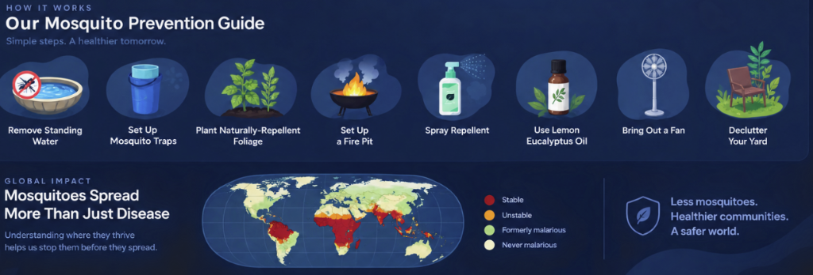

Data-driven epidemiological insights, global and national mortality statistics, biological prevention frameworks, and public health intelligence.
When in areas where mosquitoes or ticks may be present:
Simple steps for a healthier tomorrow, understanding where vectors thrive to stop them before they spread.

Mosquitoes are clinically classified by the World Health Organization as the deadliest animal on earth, responsible for more human fatalities annually than all other organisms combined.
Global deaths caused annually by mosquito-borne pathogens, primarily Malaria and severe Dengue (WHO).
Over half the world\'s population lives in areas prone to Dengue transmission, rapidly expanding with warming microclimates.
Global reported Dengue cases have multiplied eightfold over two decades due to rapid urban density and heat islands.
The brief window from aquatic egg to biting adult. Regular source intervention within this timeline completely breaks transmission.
In rapidly expanding metropolitan regions across India and Telangana, urban heat islands combined with unmaintained storm drainage create permanent incubator zones. Dense populations, multi-story construction sites with open water curing, and discarded plastic receptacles sustain high vector reproduction rates independent of monsoon seasonality.
Dengue transmission peaks not in neglected wilderness, but within residential neighborhoods where clean standing water provides the ideal oviposition nursery for Aedes aegypti. Eliminating these fatalities is not a matter of mystery—it is purely a matter of early prediction and timely civic action.
Actionable frameworks combining household source reduction with precision biological interventions.
Because Aedes larvae require 7 to 10 days to mature, emptying, scrubbing, and drying all domestic water containers once every seven days interrupts the cycle before adults emerge.
Bacillus thuringiensis israelensis (Bti) biosynthesizes protein protoxins (Cry and Cyt) that dissolve exclusively in the alkaline midgut of mosquito larvae, creating lethal pores without affecting humans, fish, or pets.
For larger, non-potable water reservoirs and community tanks, introducing larvivorous fish species creates a permanent, self-sustaining biological predation barrier.
Common questions on vector biology, municipal reporting, and autonomous environmental protection.